Initial Research
Problem framing • Student interviews • Placement cell interview • Insights
How does campus placement actually run, and where does it break for students?
Students need
Young professionals need
What runs placement
Where updates reach students
Most common pain points
one student or young professional who raised it, out of 13 interviewed
College uses POD, a placement platform
2024 · POD
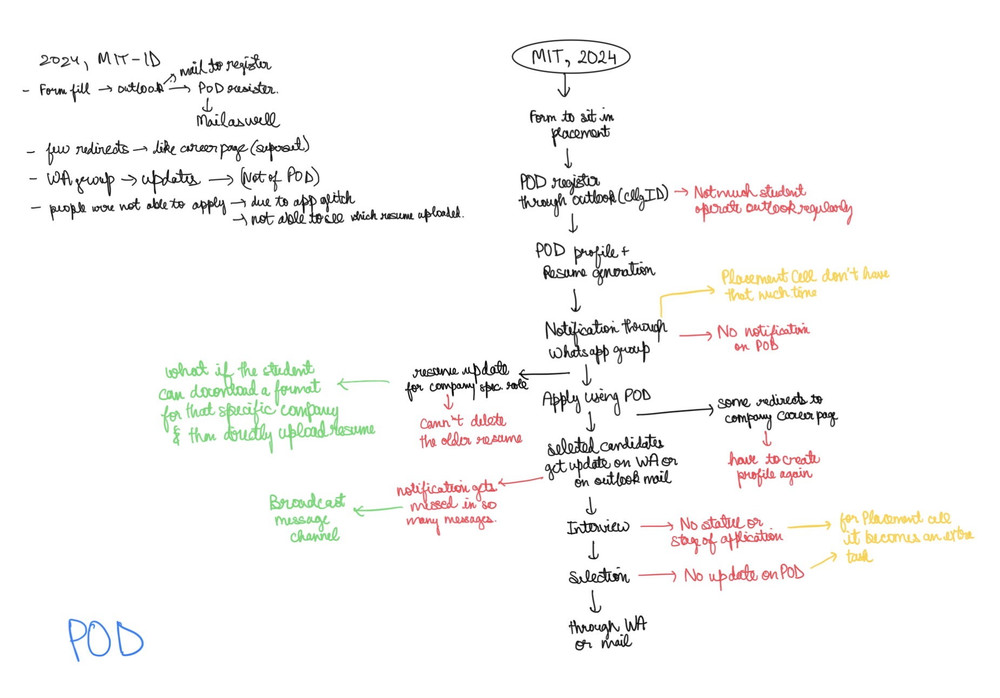
College uses Superset
2023 · Superset · online (Covid)
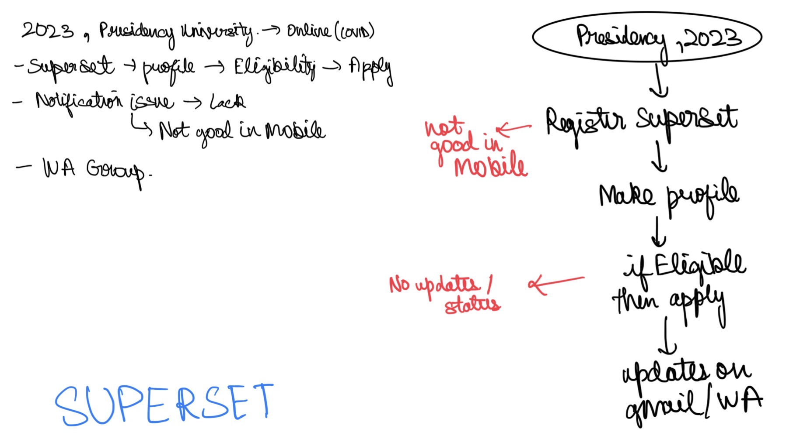
College built its own portal
2024 · own website
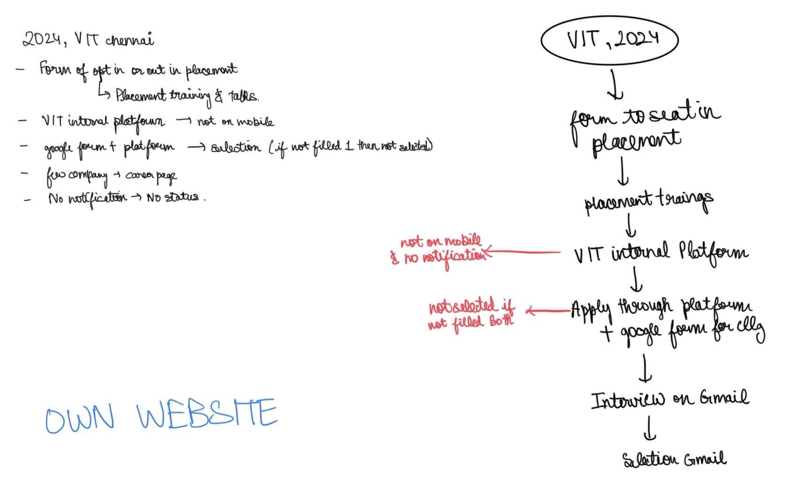
2024 · own website
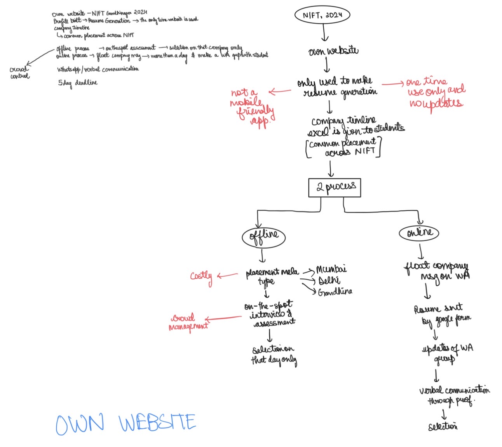
2023 · own website
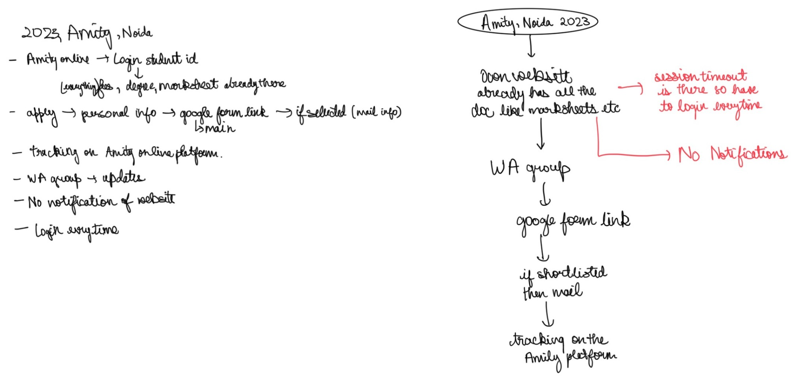
Everything runs on WhatsApp, Gmail and Google Forms
2022 · no platform
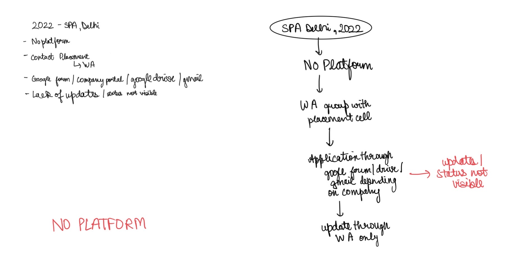
2024 · Masters · no platform
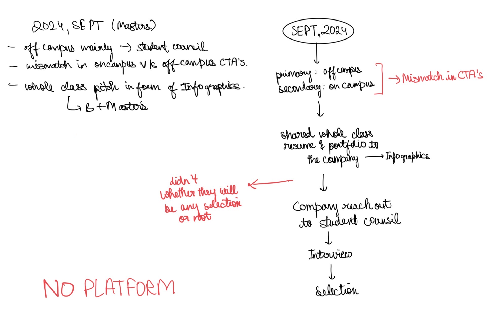
2023 · no platform
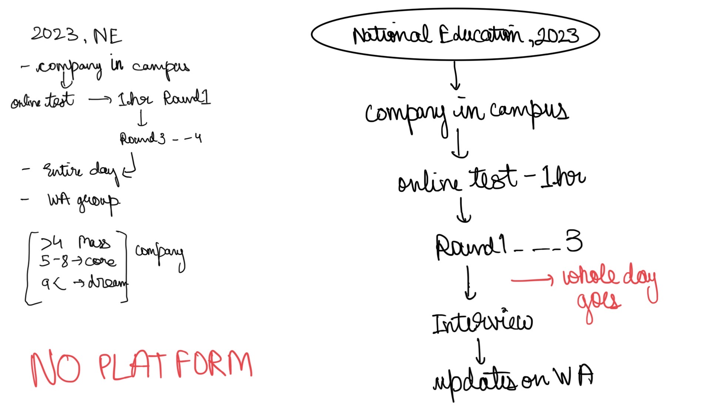
2023 · no platform
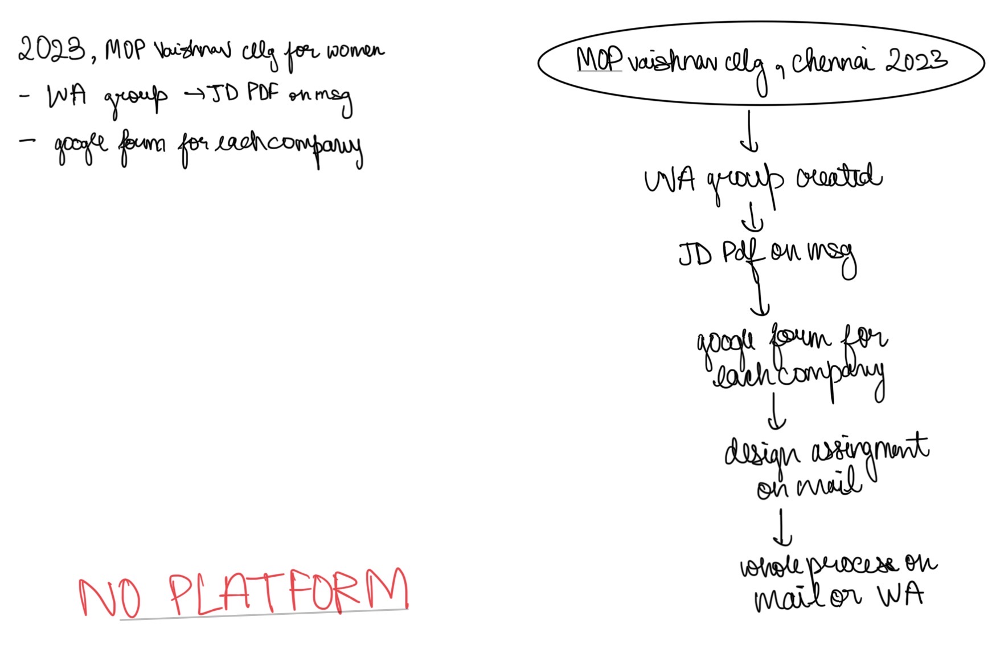
2024 · no platform
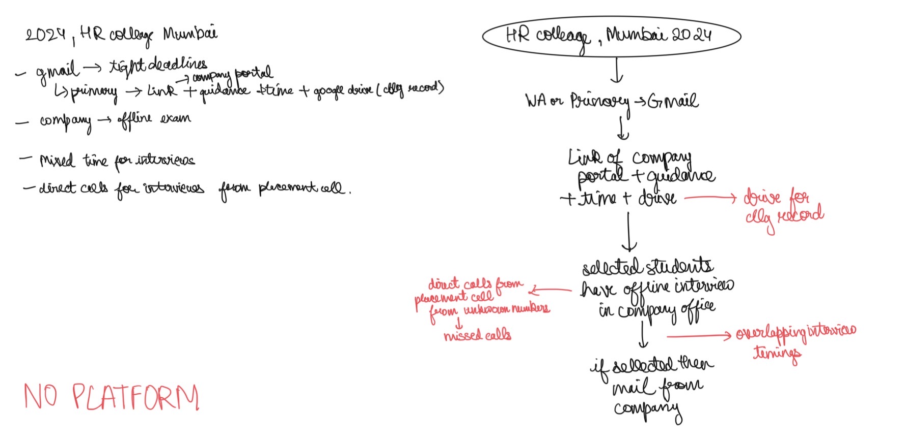
2021 · no platform
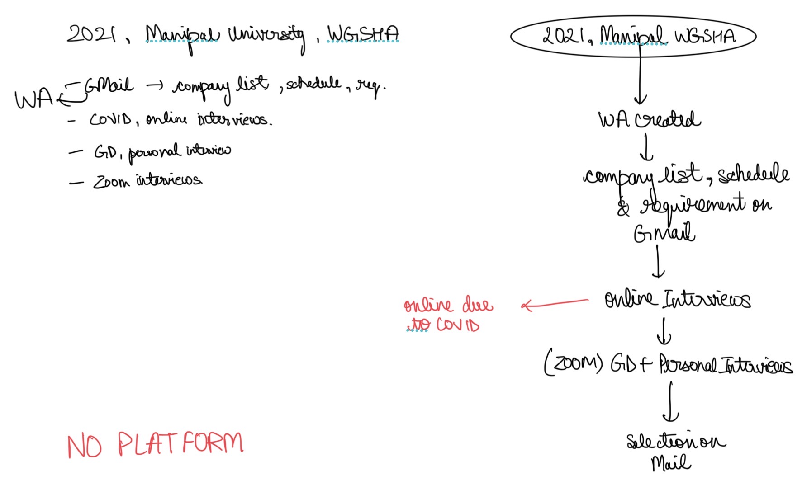
2024 · no platform
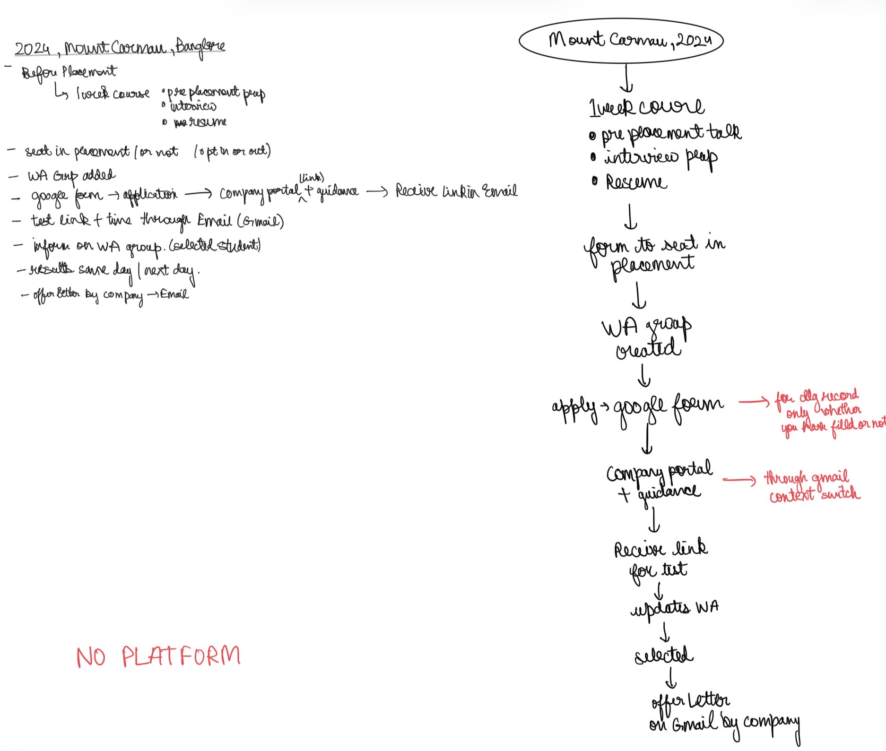
2017 · no portal
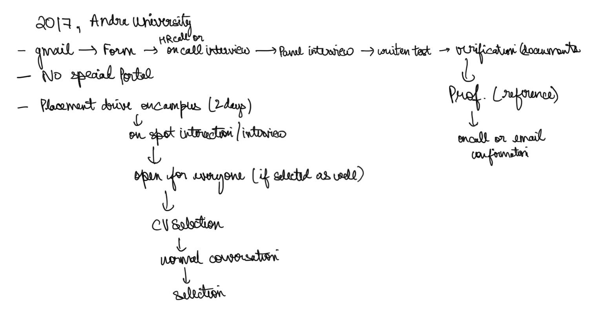
Inputs from the MIT-ID, Pune placement cell.
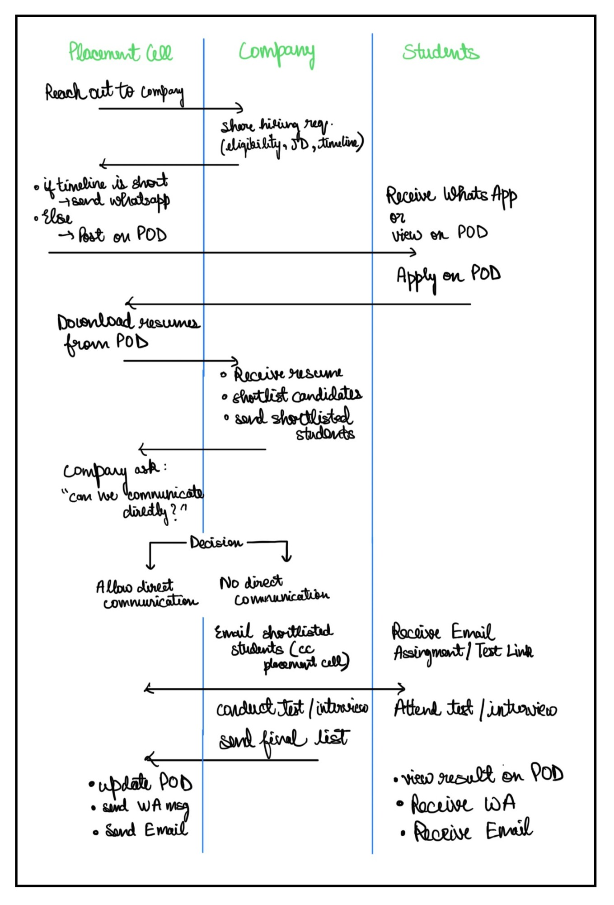
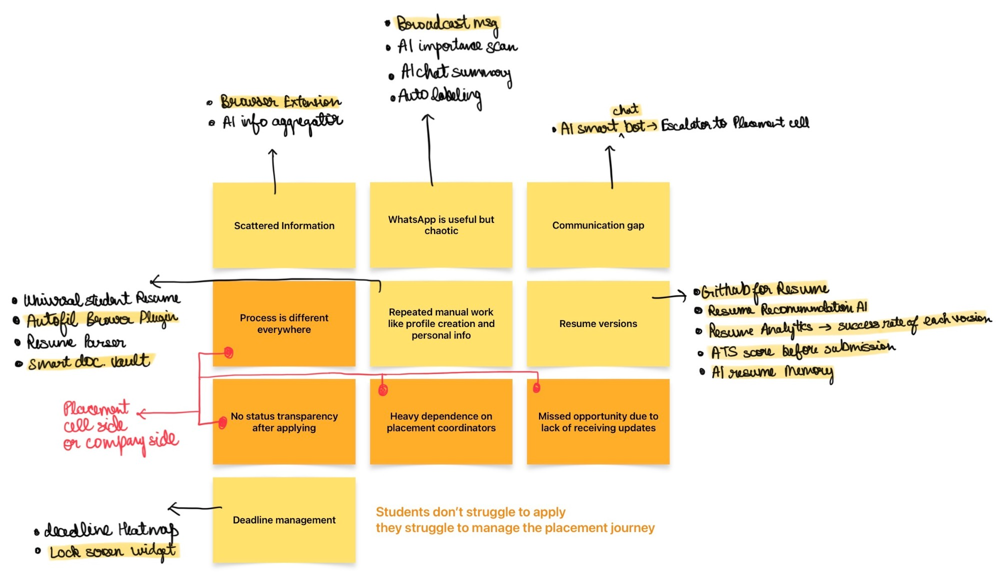
Tap the image to open it full size.
Why not Notion or Sheets?
App or just notifications?
See what testing found: testing analysis